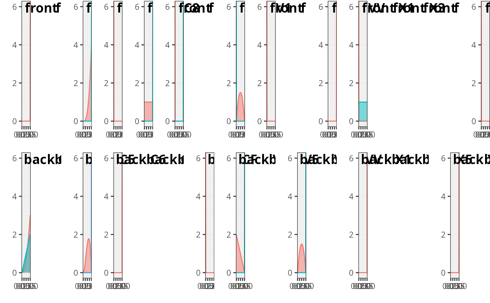

Plot the prior table
Arguments
- history_table
data.frame: the
prior_tablecomponent of the object returned byov_create_history_table()- team
string: team name
- setter_id
string: setter_id
Examples
hist_dvw <- ovdata_example("NCA-CUB")
history_table <- ov_create_history_table(dvw = hist_dvw, setter_position_by = "front_back",
normalize_parameters = FALSE)
team = unique(history_table$prior_table$team)[1]
setter_id = unique(history_table$prior_table$setter_id)[1]
ov_plot_history_table(history_table, team, setter_id)
#> Warning: There was 1 warning in `mutate()`.
#> ℹ In argument: `dplyr::across(dplyr::matches("setter_position"), factor, levels
#> = setter_rotation_levels)`.
#> Caused by warning:
#> ! The `...` argument of `across()` is deprecated as of dplyr 1.1.0.
#> Supply arguments directly to `.fns` through an anonymous function instead.
#>
#> # Previously
#> across(a:b, mean, na.rm = TRUE)
#>
#> # Now
#> across(a:b, \(x) mean(x, na.rm = TRUE))
#> ℹ The deprecated feature was likely used in the ovlytics package.
#> Please report the issue at <https://github.com/openvolley/ovlytics/issues>.
#> Joining with `by = join_by(setter_front_back, attack_code)`
